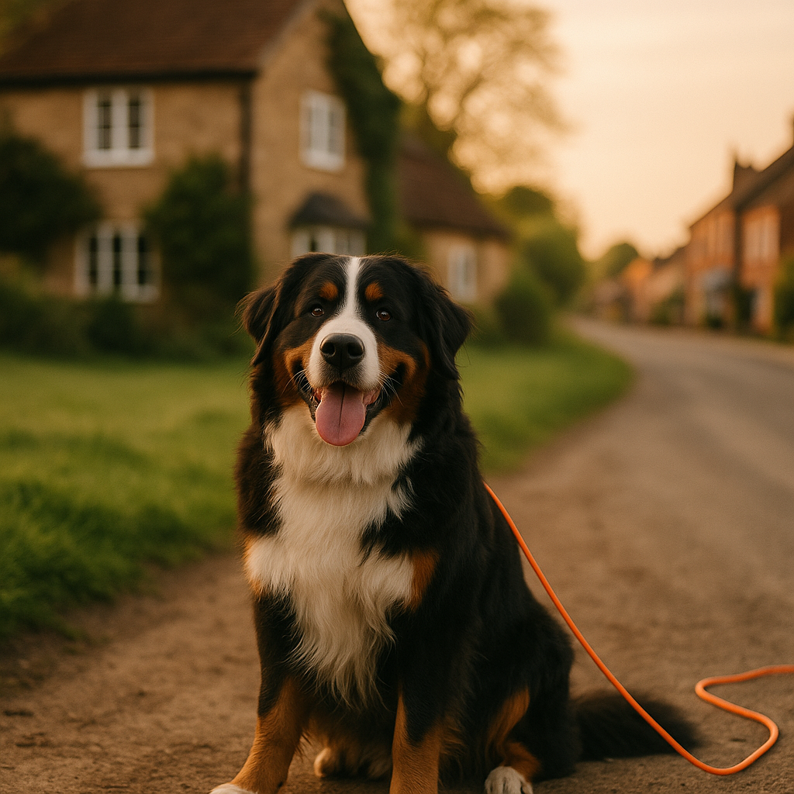
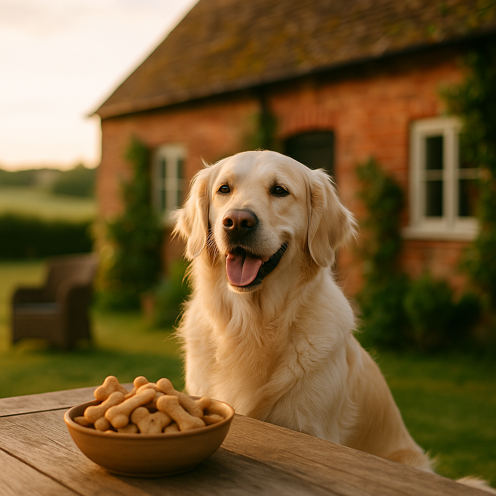
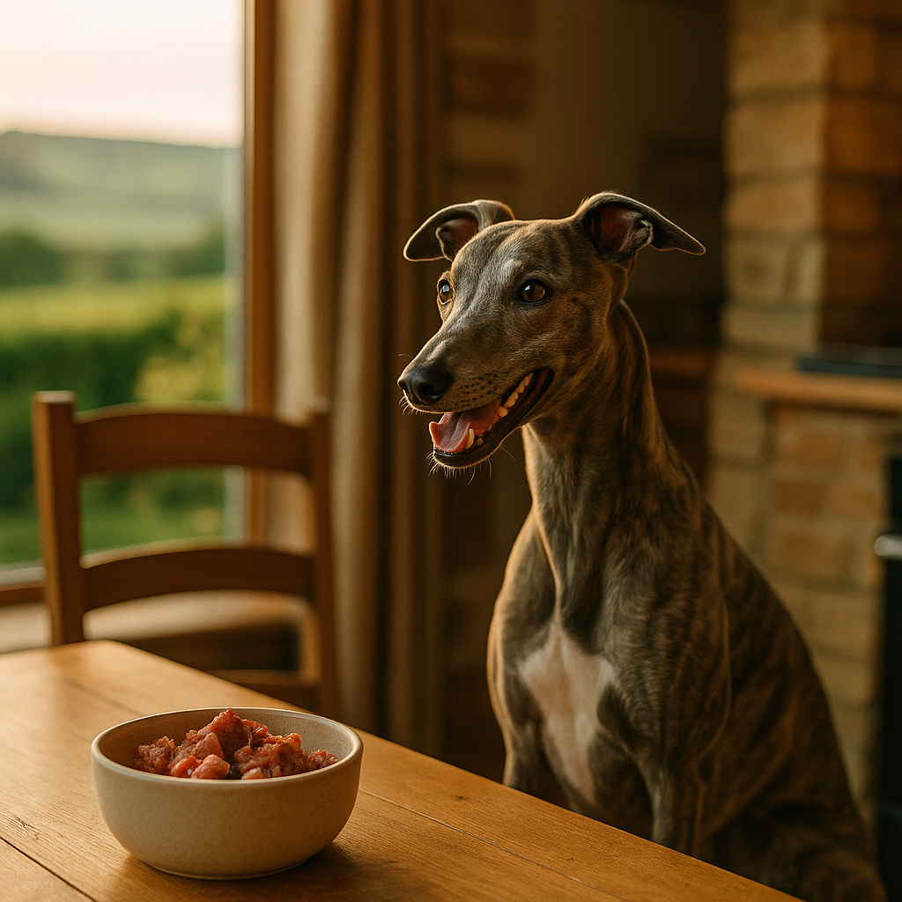
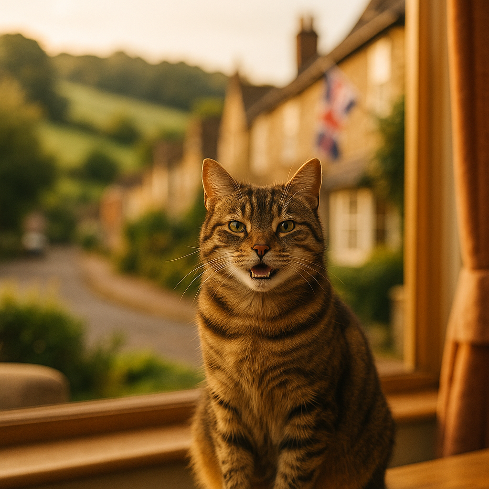
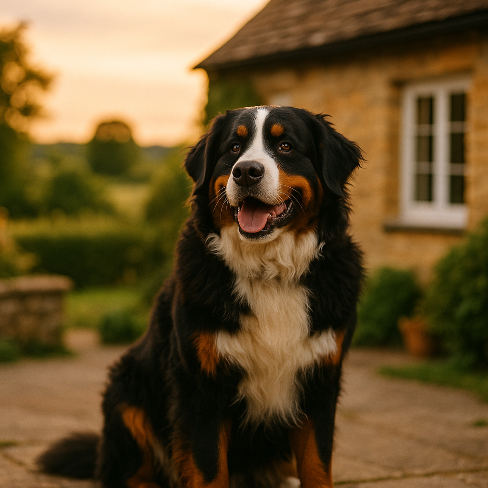

Latest Guides
Keep Dogs & Cats Busy During Fireworks: Best Enrichment Toys, Chews & Safe Dens for Bonfire Night UK
Discover the best enrichment toys, lick mats, long-lasting chews and safe den setups to keep dogs and cats calm and occupied during fireworks.

Best Dry Food for Bengal Cats UK 2026: Breed-Specific Nutrition Guide
Bengals are active, muscle-heavy cats with high protein needs. Here are the best dry food options available in the UK for this energetic breed in 2026.

Long Line Training for Dogs UK 2026: How to Build a Reliable Recall Safely
A long line is one of the most effective tools for teaching a safe, reliable recall. Here is how to use one correctly in the UK.

Homemade Dog Treat Recipes UK 2026: Vet-Approved Ideas Your Dog Will Love
Skip the packet and make your dog something special. These vet-approved homemade treat recipes use simple UK store-cupboard ingredients.

Raw Food Diet for Puppies UK 2026: A Safe and Practical Guide
Thinking about raw feeding your puppy? Here is what UK vets recommend, plus practical portion guidance and food safety tips.

Fireworks and Cats: Keeping Indoor and Outdoor Cats Safe on Bonfire Night 2026
Essential guide to protecting your cat from fireworks anxiety during Bonfire Night. Safety tips for indoor and outdoor cats plus calming solutions.

How to Keep Dogs and Cats Calm During Fireworks in the UK 2026
Expert tips to help your dog or cat stay calm during UK fireworks season. Safe calming methods, products and vet advice.
Best Calming Products for Pets UK 2026: Adaptil, Feliway, Thunder Shirts Compared
Compare top calming products for anxious dogs and cats in the UK including Adaptil, Feliway, thunder shirts and supplements.

Best Cat Vitamins and Supplements UK 2026: What Your Cat Actually Needs
Not all cats need supplements, but when they do, here are the UK vet-backed options worth buying in 2026.

Puppy Training Tips UK 2026: A Practical Week-by-Week Guide
Start your puppy off right with this week-by-week UK training guide covering everything from toilet training to recall.

Keeping Outdoor Cats Safe in Autumn: Shorter Days, Cold Nights & Road Risks 2026
Protect your outdoor cat this autumn with safety tips for darker evenings, colder weather, and increased traffic risks.

Best Food for Staffordshire Bull Terriers UK 2026: Breed-Specific Nutrition Guide
Find the best UK dog food for Staffordshire Bull Terriers, with vet-backed picks for muscular builds, sensitive skin and every life stage.